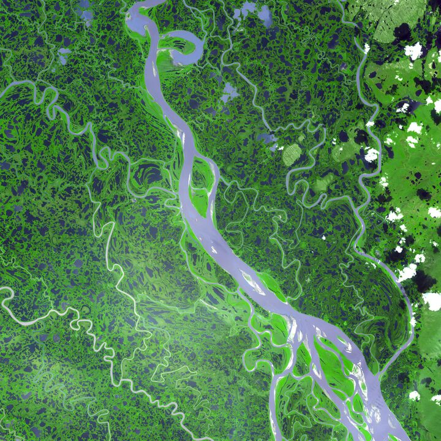
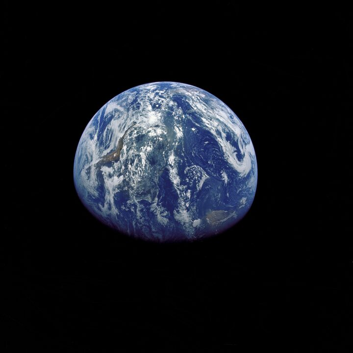

05 · Beyond
Beyond
Science doesn’t stop at the journal. I bring geomorphology into kitchens, classrooms and conversations — and help run the communities I work in.
Science communication

Cosmo Cookbook
2024–26An art–science project. Funded by the Goethe Institut & Associação Estufa.

Podcasts & talks
2021–24Landscapes Live · Traces.Dreams · Coffee & Geography.
Outreach & public engagement
Convening & seminars
AGU Fall Meeting — session convener, 2021 & 2022.
GFZ Potsdam — lead organiser, Geomorphology seminars.
Peer review & committees
Reviewer — Basin Research, ESurf, G-cubed, Geology.
EDI — Geomorphica · Imperial ESE · Athena SWAN.
From the blog
all posts →